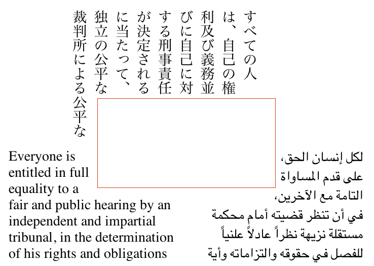
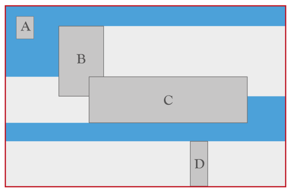
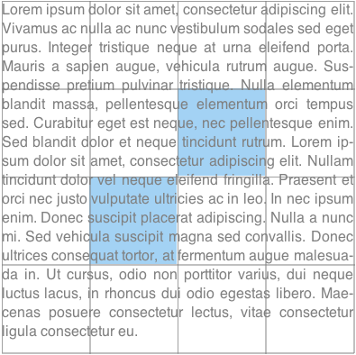
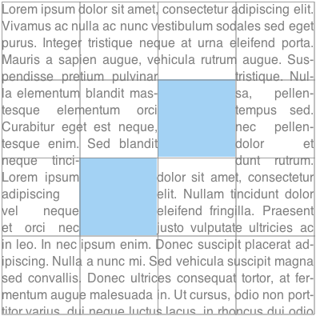
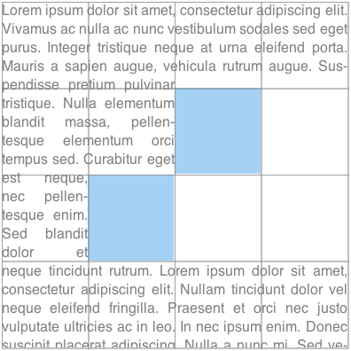
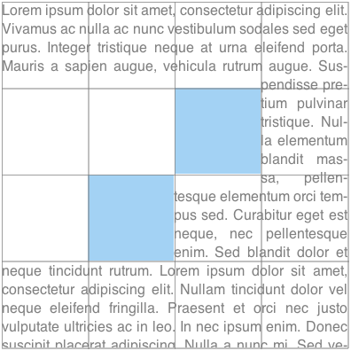
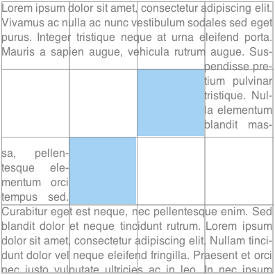
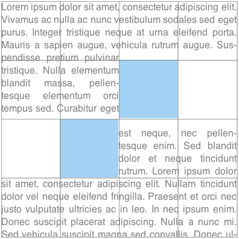
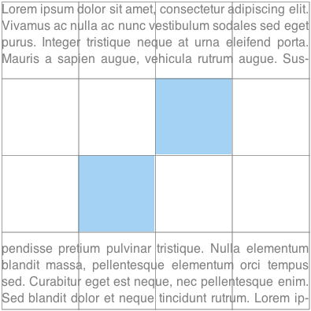

CSS Exclusions define arbitrary areas around which inline content ([[!CSS21]]) can flow.
CSS Exclusions can be defined on any CSS block-level elements. CSS
Exclusions extend the notion of content wrapping previously limited to
floats.
Status of this document
This specification was previously called “CSS Exclusions and
Shapes.” The definitions for shapes are now in a separate
specification, see [[CSS-SHAPES]].
Introduction
This section is not normative.
This specification defines features that allow inline flow
content to wrap around outside the exclusion area of elements.
Terminology
Exclusion box
A box ([[!CSS3BOX]]) that defines an exclusion area for other boxes. The 'wrap-flow'
property is used to make an element's generated box an exclusion box. An exclusion box contributes
its exclusion area to its
containing block'swrapping context. An element with a 'float'
computed value other than 'none' does not become an exclusion.
Exclusion area
The area used for excluding inline flow content around an exclusion box. The
exclusion area is equivalent to the
border box for an exclusion box.
If a user agent implements both CSS Exclusions and CSS Shapes,
the shape-outside property defines the exclusion area
instead of the border box.
Exclusion element
An exclusion element
is a block-level element
which is not a float
and generates an exclusion box.
An element generates an exclusion box when
its 'wrap-flow' property's computed value
is not 'auto'.
Wrapping context
The wrapping context
of a box is a collection
of exclusion areas
contributed by its associated exclusion boxes.
During layout,
a box wraps its inline flow content
in the wrapping area
that corresponds to the subtraction
of its wrapping context
from its own content area.
A box inherits its
containing block'swrapping context unless it specifically
resets it using the 'wrap-through' property.
Content area
The content area
is normally used for layout of the inline flow content of a box.
Wrapping area
The area used for layout of inline flow content of a box affected by a wrapping context, defined by subtracting the wrapping context from its content area
Outside and inside
In this specification, 'outside' refers to DOM content that is not a descendant of an element
while 'inside' refers to the element's descendants.
Exclusions
Exclusion elements define exclusion areas that contribute to their containing block's
wrapping context. As a consequence, exclusions impact the layout of their
containing block's descendants.
Elements lay out their inline content in their content area and wrap around the
exclusion areas in their associated wrapping context. If the element is itself an exclusion, it
does not wrap around its own exclusion area and the impact of other exclusions on other
exclusions is controlled by the 'z-index' property as explained in the
exclusions order section.
Declaring exclusions
An element becomes an exclusion when its 'wrap-flow' property has a computed value other than
'auto'.
The 'wrap-flow' property
Name:
wrap-flow
Value:
auto | both | start | end | minimum | maximum | clear
Initial:
auto
Applies to:
block-level elements.
Inherited:
no
Percentages:
N/A
Media:
visual
Computed value:
as specified except for element's whose 'float' computed value is not
none, in which case the computed value is 'auto'.
The values of this property have the following meanings:
auto
No exclusion is created. Inline flow content interacts with the element as usual.
In particular, if the element is a
float (see [[CSS21]]), the
behavior is unchanged.
both
Inline flow content can flow on all sides of the exclusion.
start
Inline flow content can flow
around the start edge
of the exclusion area
but must leave the area
next to the end edge
of the exclusion empty.
end
Inline flow content can flow
around the end edge
of the exclusion area
but must leave the area
next to the start edge
of the exclusion empty.
minimum
Inline flow content can flow
around the edge of the exclusion
with the smallest available space
within the flow content's containing block,
and must leave the other edge
of the exclusion empty.
maximum
Inline flow content can flow
around the edge of the exclusion
with the largest available space
within the flow content's containing block,
and must leave the other edge
of the exclusion empty.
clear
Inline flow content can only flow
before and after the exclusion
in the flow content's block direction
and must leave the areas
next to the start and end edges
of the exclusion empty.
If the property's computed value is 'auto', the element does not become an
exclusion.
Otherwise, a computed 'wrap-flow' property value of 'both', 'start', 'end', 'minimum',
'maximum' or 'clear' on an element makes that element an exclusion element.
It's exclusion area is contributed to its containing block's
wrapping context, causing the containing block's descendants to wrap around
its exclusion area.

Exclusion with 'wrap-flow: start' interacting with various writing modes.
Determining the relevant edges of the exclusion depends on the writing mode [[!CSS3-WRITING-MODES]] of the content wrapping around the exclusion area.
An exclusion element establishes a
new block formatting context (see [[!CSS21]]) for its content.

Combining exclusions
The above figure illustrates how exclusions are combined.
The outermost box represents an element's content box.
The A, B, C and D darker gray boxes represent exclusions
in the element's wrapping context.
A, B, C and D have their respective 'wrap-flow'
computed to 'both', 'start', 'end' and 'clear' respectively.
The lighter gray areas show the additional areas
that are excluded for inline layout
as a result of the 'wrap-flow'value.
For example, the area to the right of 'B'
cannot be used for inline layout
of left-to-right writing mode content
because the 'wrap-flow' for 'B' is 'start'.
The background 'blue' area shows what areas are available
for a left-to-right writing mode element's inline content layout.
All areas represented with a light or dark shade of gray
are not available for (left-to-right writing mode) inline content layout.
The 'wrap-flow' property values applied to exclusions as grid items.
The following figures illustrate the visual rendering for different values
of the 'wrap-flow' property. The gray grid lines are marking the grid cells. and the
blue area is the exclusion box (positioned by the grid).
.exclusion{ wrap-flow: auto; }
.exclusion{ wrap-flow: both; }


.exclusion{ wrap-flow: start; }
.exclusion{ wrap-flow: end; }


.exclusion{ wrap-flow: minimum; }
.exclusion{ wrap-flow: maximum; }


.exclusion{ wrap-flow: clear; }

Scope and effect of exclusions
An exclusion affects
the inline flow content descended
from the exclusion's containing block
(defined in
CSS 2.1 10.1)
and that of all descendant elements
of the same containing block.
All inline flow content
inside the containing block
of the exclusions is affected.
To stop the effect of exclusions
defined outside an element,
the 'wrap-through' property can be used
(see the propagation of exclusions
section below).
As a reminder,
for exclusions with 'position:fixed',
the containing block is that
of the root element.
Propagation of Exclusions
By default, an element inherits its parent wrapping context. In other words
it is subject to the exclusions defined outside the element.
Setting the 'wrap-through' property to 'none' prevents an element from inheriting its parent
wrapping context. In other words, exclusions defined 'outside' the element, have not effect
on the element's children layout.
Exclusions defined by an element's descendants still contribute to their containing block's
wrapping context. If that containing block is a child of an element with 'wrap-through'
computes to none, or the element itself, then exclusion still have an effect on the children of that
containing block element.
The 'wrap-through' Property
Name:
wrap-through
Value:
wrap | none
Initial:
wrap
Applies to:
block-level elements
Inherited:
no
Percentages:
N/A
Media:
visual
Computed value:
as specified
The values of this property have the following meanings:
wrap
The element inherits its parent node's wrapping context. Its descendant
inline content wraps around exclusions defined outside
the element.
none
The element does not inherit its parent node's wrapping context. Its
descendants are only subject to exclusion areas defined inside
the element.
Using the 'wrap-through' property to control the effect of exclusions.
Exclusions follow the painting order (See [[!CSS21]] Appendix E). Exclusions are
applied in reverse to the document order in which they are defined. The last exclusion
appears on top of all other exclusion, thus it affects the inline flow content of
all other preceding exclusions or elements descendant of the same containing block.
The 'z-index' property can be used to change the ordering of
positioned exclusion
boxes (see [[!CSS21]]). Statically positioned exclusions are not affected by the
'z-index' property and thus follow the painting order.
The current draft provides a model for exclusions
without a collision-avoidance model.
The existing exclusion model in CSS uses floats,
which have both exclusion and collision-avoidance behavior.
Concerns have been raised that allowing exclusions
without collision avoidance could be harmful,
particularly with absolutely-positioned elements.
Three options should be considered:
Allow exclusions in positioning schemes
with no collision avoidance.
Disallow exclusions in positioning schemes
with no collision avoidance.
Define collision-avoidance behavior
for positioning schemes without it,
and use this behavior by default with exclusions.
Processing model
Description
Applying exclusions is a two-step process:
Step 1: resolve exclusion boxes belonging to each wrapping context
Step 2: resolve wrapping contexts and lay out each containing block in turn:
Step 2-A: resolve the position and size of exclusion boxes
Step 2-B: lay out containing block, wrapping around exclusion areas
Step 1: resolve exclusion boxes belonging to each wrapping context
In this step, the user agent determines which containing block each
exclusion area belongs to. This is a simple step, based on the
definition of containing blocks and elements with a computed value for 'wrap-flow'
that is not auto.
Step 2: resolve wrapping contexts and lay out containing blocks
In this step, starting from the
top of the rendering tree (see [[!CSS21]]),
the the agent processes each containing block in two sub-steps.
Step 2-A: resolve the position and size of exclusion boxes
Resolving the position and size
of exclusion boxes
in the wrapping context
may or may not require a layout.
For example,
if an exclusion box
is absolutely positioned and sized,
a layout may not be needed
to resolve its position and size.
In other situations,
laying out the containing block's content is required.
When a layout is required,
it is carried out
without applying any exclusion area.
In other words,
the containing block is laid out
without a wrapping context.
Step 2-A yields a position and size
for all exclusion boxes
in the wrapping context.
Each exclusion box is processed in turn,
starting from the top-most,
and each exclusion area
is computed and contributed
to the containing block'swrapping context.
Scrolling is ignored in this step
when resolving the position and size
of 'position:fixed' exclusion boxes.
Once the containing block'swrapping context is computed,
all exclusion boxes
in that wrapping context
are removed from the normal flow.
Step 2-B: lay out containing block applying wrapping
Finally, the content
of the containing block is laid out,
with the inline content wrapping around
the wrapping content's
exclusion areas
When the containing block itself is an exclusion box, then
rules on exclusions order define which exclusions
affect the inline and descendant content of the box.
Example
This section illustrates the exclusions processing model with an example. It is meant
to be simple. Yet, it contains enough complexity to address the issues of
layout dependencies and re-layout.
The code snippet in the following example has two exclusions affecting
the document's inline content.
Step 1: resolve exclusion boxes belonging to each wrapping context
The figures illustrate how the boxes corresponding to the element sometimes
have a different containment hierarchy in the layout tree than in the DOM tree.
For example, the box generated by e1 is positioned in
its containing block's box, which is the d1-box, because
e1 is absolutely positioned and d1
is relatively positioned. However, while e2 is also absolutely
positioned, its containing block is the initial containing block (ICB). See the
section 10.1 of the CSS 2.1 specification ([[!CSS21]]) for details.
As a result of the computation of containing blocks for the tree, the boxes belonging
to the wrapping contexts of all the elements can be determined:
The wrapping context for the html element contains the e2 box: WC-1 (Wrapping Context 1)
The wrapping context for the body element inherits the html element's wrapping context: WC-1
The wrapping context for d1 inherits the body element's
wrapping context and adds the e1-box to it. So the wrapping
context is made of both the e1-box and the
e2-box: WC-2
The wrapping context for d2 inherits the body element's
wrapping context: WC-1
Step 2: resolve wrapping contexts and lay out containing blocks
In this step, each containing block is processed in turn. For each containing block,
we (conceptually) go through two phases:
resolve the wrapping context: resolve the position and size of its exclusions
lay out the containing block
In our example, this breaks down to:
resolve the position and size of the exclusions belonging to WC-1: RWC-1 (Resolved Wrapping Context 1).
lay out the initial containing block (i.e., lay out its content):
resolve the html element's wrapping context: RWC-1
lay out the html element:
resolve the body element's wrapping context: RWC-1
lay out the body element:
resolve the d1 element's wrapping context: RWC-2
lay out the d1 element
resolve the d2 element's wrapping context: RWC-1
lay out the d2 element
Resolving RWC-1
The top-most wrapping context in the layout tree contains the e2
exclusion. Its position and size needs to be resolved. In general, computing an
exclusion's position and size may or may not require laying out other content.
In our example, no content needs to be laid out to resolve the e2
exclusion's position because it is absolutely positioned and its size can be resolved
without layout either. At this point, RWC-1 is resolved and can be used when
laying inline content out.
Resolving RWC-2
The process is similar: the position of the
e1 exclusion needs to be resolved. Again, resolving the exclusion's
position and size may require processing the containing block (d1 here).
It is the case here because the size and position of
e1 depend on resolving the percentage lengths. The percentages are relative
to the size of
d1's box. As a result, in order to resolve
a size for d1's box, a first layout of d1
is done without any wrapping context (i.e., no exclusions applied). The layout yields a
position and size for e1's box.
At this point, RWC-2 is resolved because the position and size of both
e1 and e2 are resolved.
The important aspect of the above processing example is that once an element's wrapping context
is resolved (by resolving its exclusions' position and size), the position and size of the
exclusions are not re-processed if the element's size changes between the layout that may be done
without considering any wrapping context (as for RWC-2) and the layout done with the resolved wrapping context.
This is what breaks the possible circular dependency between the resolution of wrapping contexts
and the layout of containing blocks.
Floats and exclusions
Similarities
There are similarities between floats and exclusions in that inline content wraps around floats
and also wraps around exclusion areas. However, there are very significant differences.
Differences
scope. While floats apply to content that follows in the
document, exclusions apply to content in their containing block.
positioning. Floats are part of the inline flow and 'float' on the
line box. Authors can control how the floats move on the line box, to the right or to the
left. By contrast, exclusions can be positioned using any positioning scheme such
as grid layout ([[CSS3-GRID-LAYOUT]]), flexible box ([[CSS3-FLEXBOX]]) or any other
CSS positioning scheme.
separation of concerns. Making an element a float determines both
its positioning scheme and its effect on inline content. Making an element an
exclusion only determines its impact on inline content and does not impose constraints
on its positioning method.
Interoperability
Effect of floats on exclusions
Floats have an effect on the positioning of exclusions and the layout of their inline content. For
example, if an exclusion is an inline-box which happens to be on the same line as a float,
its' position, as computed in Step 2-A will be impacted by the float, as
is any other inline content.
Effect of exclusions on floats
Exclusions have an effect on the positioning of floats as they have an effect on inline content.
Therefore, in Step 2-B, floats will avoid exclusion areas.
Conformance
Acknowledgments
This specification is made possible by input from
Andrei Bucur,
Alexandru Chiculita,
Arron Eicholz,
Daniel Glazman,
Arno Gourdol,
Chris Jones,
Bem Jones-Bey,
Marcus Mielke,
Alex Mogilevsky,
Hans Muller,
Mihnea Ovidenie,
Virgil Palanciuc,
Peter Sorotokin,
Bear Travis,
Eugene Veselov,
Stephen Zilles
and the CSS Working Group members.